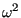

Centrifugal loading is selected by the *DLOAD card,
together with the CENTRIF label. Centrifugal loading is characterized
by its magnitude (defined as the rotational speed square )
and two points on the rotation axes. To obtain the force per unit volume the
centrifugal loading is multiplied by the density. Consequently, the material density is
required. The parameter OP=NEW on the *DLOAD card removes all previous
distributed loads. It only takes effect for the first *DLOAD card in a
step. A buckling step always removes all previous loads.